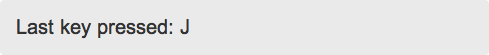

Event Handling
Enyo employs a message-passing strategy for indirect communication between components. We refer to these messages as “events” to dovetail with common DOM usage. In general, events bubble up the component tree from child to parent. When using the dom package (part of the Enyo core), DOM events and custom events are unified.
The use of events is key to enforcing encapsulation in your component design. In most cases, the child of a component should have no knowledge of its parent. Instead of calling functions on (and thus tightly binding itself to) its parent, a child should send events, which the parent may choose to handle or not handle.
While sending events from child to parent is the standard paradigm in Enyo, in some situations the implementation of this model can result in inefficient and unwieldy code. Thus an alternative method of communication exists–this involves the use of enyo.Signals and is discussed at the end of the current document.
Sending Events
A component declares the events that it sends using an events block, e.g.:
Note that, by convention, event names always start with "on".
For each event registered in a component’s events block, a helper function do<EventName>(inEvent) is created on the kind, which the component may call to send the event up the component tree. This function takes an optional inEvent parameter, which can contain event-specific information to be passed to the handler. For example, to send the "onStateChanged" event from the example above, a component would call
Under the hood, the do<EventName> function wraps Enyo’s generic bubble function for sending events up the component tree:
inEventNameis the event name (including the"on"prefix).inEventis an optional object containing event-specific information (this is the same object listeners receive asinEvent, although it may be decorated, e.g., with theoriginatorproperty). Note that this must be a JavaScript object, not a primitive.inSendershould almost always be omitted, although you could use it to force a particular sender for the next handler.
Note: Declaring an events block and using the do<EventName> helper function is preferable to calling bubble() directly, since the events block is more descriptive and serves to define the interface to your kind.
Creating Handlers
An event handler is a function assigned to “catch” events bubbling up from children. For example:
myEventHandler: function(inSender, inEvent) {
// Can return true to indicate that this event was handled and
// propagation should stop
}inSenderis the immediate sender of the event–that is, the last enyo.Component to touch the event before passing it tothis.inEventis an object that contains event data. For DOM events, this is the standard DOM event object. For custom events, it’s a custom object.
The handler may return a truthy value to stop propagating the event. Otherwise, it will continue bubbling up the component tree.
Note that the meaning of the return value is different from the classic DOM convention (historically, the return value would determine whether the default action occurs). If you need to control the default action on a DOM event, use the modern equivalent, inEvent.preventDefault().
inEvent.stopPropagation() will not prevent propagation of events in Enyo; instead, return true from the handler.
Because events propagate until stopped, an event’s sender (inSender) may be different from its originator (i.e., the component that originally fired the event). The originating component is available to the event handler as inEvent.originator.
For example, when clicked, a button originates an onclick event, which bubbles up the control chain. The button’s parent may bubble the event up to the button’s grandparent. From the grandparent’s perspective, the originator is the button and the sender is the button’s parent.
Attaching Handlers to Events
There are two common ways of handling events in a component. The first is to set a handler name on an object owned by the component, like so:
components: [
{name: "thing", ontap: "thingTap"}
],
thingTap: function(inSender, inEvent) {
// do stuff
}The second is to name a catch-all handler in the handlers block, like so:
Note that if you use both event handling strategies at the same time, you will receive the event in both places by default. You may avoid this behavior by preventing propagation in thingTap(). For example:
components: [
{name: "thing", ontap: "thingTap"}
],
handlers: {
ontap: "anythingTap"
},
thingTap: function(inSender, inEvent) {
// taps on _thing_ will bubble up to _anythingTap()_ also,
// unless I stop propagation here
return true; // handled here, don't propagate
}
anythingTap: function(inSender, inEvent) {
// do stuff
}If you need more sophisticated handling, you can use the inSender and inEvent.originator properties to help you discern the provenance of the event.
DOM Events
In Enyo, DOM events are allowed to bubble all the way up to document, where they are handled by enyo.dispatcher. The dispatcher figures out where to send the event and provides hooks for various bits of event processing.
Whenever possible, the dispatcher avoids disturbing original DOM events. To forcibly stop the bubbling of a DOM event, you may return true from the event’s handler method.
In addition to the target property, which is set on all event objects, Enyo specifies a dispatchTarget property, which is set to the Enyo control containing the event target.
The following DOM events are handled by Enyo:
- mousedown
- mouseup
- mouseover
- mouseout
- mousemove
- mousewheel
- click
- dblclick
- change
- keydown
- keyup
- keypress
- input
- paste
- copy
- cut
- resize
- load
- unload
- message
- hashchange
- webkitTransitionEnd
- transitionend
- webkitAnimationEnd
- animationEnd
If there are additional DOM events that you want Enyo to handle, use the enyo.dispatcher.listen() method. For example, the following code sets up a handler for an event called myEvent:
Here the first parameter is an event receiver to listen on (typically document or window). The second parameter is the name of the event to listen for, and the third is the handler method.
In addition to DOM events, there are a number of normalized input events that the dispatcher sends as synthesized “DOM-like” events (e.g., ontap, ondown, onup, ondragstart, ondrag, ondragfinish, onenter, and onleave). Most of these events work across platforms, so client code does not have to distinguish between touch and mouse interfaces. These events are discussed in detail in the following section.
As a matter of convention, DOM events and DOM-like events remain lowercase when dispatched as Enyo events (i.e. ontap), but custom events declared by Enyo kinds use camel case (i.e. onStateChanged).
Normalized User Input
As noted above, Enyo supports a set of normalized, DOM-like events that work similarly across all supported platforms. These events are provided so that users can write a single set of event handlers for applications that run on both mobile and desktop platforms. They are needed because desktop and mobile platforms handle basic input differently. For example, desktop platforms provide mouse events, while mobile platforms support touch events and a limited set of mouse events for backward compatibility.
Normalized Input Events
Event normalization takes place in Enyo Core, in code from the dom (drag.js, gesture.js) and touch (gesture.js, msevents.js, touch.js) packages.
The following normalized events are synthesized from the available DOM events:
downis generated when the pointer is pressed down.upis generated when the pointer is released up.tapis generated when the pointer is pressed down and released up. The target is the lowest DOM element that received both the relateddownandupevents.moveis generated when the pointer moves.enteris generated when the pointer enters a DOM node.leaveis generated when the pointer leaves a DOM node.dragstartanddragfinishare sent for pointer moves that exceed a certain threshold.draganddropare sent to the original target of the pointer move, to provide information about the item being moved over (or released over) another element.dragoveranddragoutare sent in addition tooverandoutwhile there is an active drag.holdis generated when the pointer is held down without moving for a short period of time (~200ms).releaseis generated when the pointer is released after being held down, or is moved off of the node while still held down, but before any potentialdragstartevent. The target is the same as that of theholdevent.holdpulseis generated when the pointer is held down without moving for a short period of time; it repeats periodically about once every 200ms. Use this event to trigger an action after a given period of time. The elapsed time is available in theholdTimeproperty.flickis generated when the user flicks the pointer quickly. This event provides flick velocity data through the propertiesxVelocity(velocity with respect to the horizontal axis) andyVelocity(velocity with respect to the vertical axis).
(Note that, on the Android platform, the touchmove event must be prevented via inEvent.preventDefault(), or the Enyo dragging system will not function correctly.)
Bear in mind that normalized input events are generated on Enyo controls, not DOM elements.
These normalized events are handled in the usual Enyo fashion, as outlined above.
Normalized Input Event Properties
Normalized input events have the following common properties, when available:
targetrelatedTargetclientXclientYpageXpageYscreenXscreenYaltKeyctrlKeymetaKeyshiftKeydetailidentifier
Keyboard Input
Because Enyo apps may be run on the desktop, the framework must also be able to deal with hardware keyboard input–which, unlike mouse input, cannot be translated into normalized input events.
Now, in most cases, you won’t have to worry about setting up your application code to accept keyboard input directly. If your app uses the text field kinds built into Enyo and Moonstone, those kinds will handle keyboard input automatically. However, there may be situations–in some games, for instance–in which you want your app to respond directly to keyboard-related DOM events.
To do this, you can use an enyo.Signals instance to listen for the events onkeydown, onkeypress, and onkeyup. Each keystroke fires an onkeydown and an onkeyup; if the keystroke generates a character, there will also be an onkeypress event fired between onkeydown and onkeyup.
We’ll look at how this actually works in code, but first, a proper introduction to Signals is in order.
Signals
There may be times when two distantly-related components in your app need to communicate with each other. Using the standard event model, you would pass an event up to a common parent (in the worst case, the top-level app kind) and then pass the event back down to the target component. Because this may require a significant amount of plumbing, Enyo provides an alternative.
enyo.Signals provides a means of broadcasting and subscribing to global messages, bypassing the normal component tree. Within the Enyo framework itself, DOM events that have no node targets are broadcast as signals. These events include window events, like onload and onbeforeunload, and events that occur directly on document, like onkeypress if document has the focus. (We’ll see an example of this in the following section, Handling Keyboard Input with Signals.) Signals are also useful for hooking up non-Enyo events (e.g., Cordova/PhoneGap events) to be handled by Enyo kinds in application code.
To broadcast a message, a sender simply invokes the static send() function on enyo.Signals:
inEventNameis the event name (including the"on"prefix).inEventis an optional object containing event-specific information.
To listen for a signal, a component should include a Signals instance in its components block. It should also specify a handler for the signal by setting the <messageName> property of the Signals object to the name of a method in the owning kind. This method is then called whenever a <messageName> signal is received.
For example, the following kind…
enyo.kind({
name: "Receiver",
components: [
// 'onTransmission' is the message name and 'transmission' is the
// name of a handler method in my owner.
{kind: "Signals", onTransmission: "transmission"}
],
transmission: function(inSender, inEvent) {
// respond to the signal
}
});…will handle signal events dispatched by a call like this:
Note that, like all Enyo message handlers, the signal handler (transmission()) receives two parameters: a reference to the component that sent the message (in this case, our own Signals object, this.$.signals), and any event payload that the transmitter included in the broadcast.
Some important things to note:
The signal name passed into
send()must exactly match the message name in the receiving Signals instance; both must include the"on"prefix.All Signals instances that register a handler for a particular message name will receive the message.
The
send()method is on theenyo.Signalskind itself, not an instance of a Signals component.Do not abuse Signals. Coupling objects with global communication is considered evil.
Handling Keyboard Input with Signals
Now, returning to the subject of keyboard input, the following example kind uses Signals to implement some simple handling of keyboard events:
enyo.kind({
name: "KeyboardEventExample",
kind: "enyo.FittableRows",
classes: "onyx",
components: [
{name: "myContent", content: "Please do not press the spacebar."},
{kind: "enyo.Signals", onkeypress: "handleKeyPress",
onkeydown: "handleKeyDown", onkeyup: "handleKeyUp"}
],
handleKeyDown: function(inSender, inEvent) {
// Can use inEvent.keyCode to detect non-character keys
if (inEvent.keyCode === 8) {
// respond to backspace
}
},
handleKeyPress: function(inSender, inEvent) {
// Use inEvent.charCode to detect spacebar
if (inEvent.charCode === 32) {
this.$.myContent.setContent("I thought I asked you not to press the spacebar.");
} else {
var key = String.fromCharCode(inEvent.charCode).toUpperCase();
this.$.myContent.setContent("Last key pressed: " + key);
}
},
handleKeyUp: function(inSender, inEvent) {
// Respond to keyup, if desired
}
});Within the onkeydown and onkeyup handler methods (handleKeyDown() and handleKeyUp()), inEvent.keyCode is the JavaScript key code representing the key that was pressed. In the onkeypress handler (handleKeyPress()), inEvent.charCode is the decimal value of the Unicode character generated by the keypress; you can get the character itself as a string by passing inEvent.charCode into String.fromCharCode().
For example, let’s say I press the J key on my keyboard to type a lowercase “j”. First, an onkeydown event is fired, in which inEvent.keyCode has a value of 74, the JavaScript key code for “j”. (Note that there is no distinction between lowercase and uppercase in the JavaScript key codes.) Then an onkeypress event is fired, in which inEvent.charCode has a value of 106, which is the decimal value of the Unicode character lowercase “j”. Finally, an onkeyup event is fired, in which, once again, inEvent.keyCode is 74.
Now, let’s say I press "SHIFT + J" on my keyboard to type an uppercase “J”. This fires two sets of onkeydown/onkeyup events. In the first, inEvent.keyCode has a value of 16, representing the SHIFT key, and there is no associated onkeypress event since there is no character generated. In the second onkeydown and onkeyup, inEvent.keyCode has a value of 74, which we’ve seen is the JavaScript key code for “j”. Between the second onkeydown and the second onkeyup, an onkeypress event fires, in which the value of inEvent.charCode is also 74, representing the decimal value of the Unicode character uppercase “J”.

Note that returning true from the onkeydown handler will prevent the onkeyup from firing, but will not suppress the onkeypress event.
For a more elaborate example of keyboard event handling, see the CryptoTweets sample app.
Additional Reading